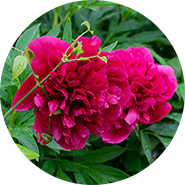
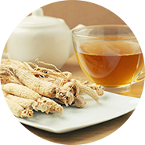
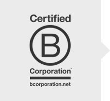
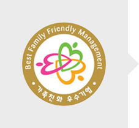

Contains 94% Paeonia Lactiflora Callus Cultures

Paeonia Lactiflora Callus Callus Cultivation Uses leaves, stem, leafstalk, and root fragments

Yellow callus is formed as a result of a cut on the surface of the plant tissue expands

Callus Culture Proliferation Process

Callus Culture Flask Suspension Process

Callus Culture Bioreactor Process

Pilot Plant Cultivation
Nutrient Rich Formula
- Free from influences of external environmental conditions
- Ability to control the amount of active ingredients produced
- GMOFree
- High reproducibility of active ingredients
- Biologically safe
Reduces the Appearance of Wrinkles and Fine Lines
Clinically tested to improve the look of wrinkles and fine lines.
Comparative sensorial profile for efficacy (Positive answers, %)
Hyaluronic Acid
Product ingredients
Key Ingredients
-

Paeonia Lactiflora Callus Culture
Contains Paeonia Lactiflora Callus Cultures to help maintain healthy skin, minimize the appearance of pores, and to help make the skin appear firmer.
-
Adenosine
Contains Adenosine, an ingredient that is individually recognized by the Korea Ministry of Food and Drug Safety, to reduce the appearance of wrinkles and fine lines.
-

Panax Ginseng Callus Culture Extract
Helps to nourish and revitalize the skin.
-
Hydrolyzed Ginseng Saponins
Helps to nourish and strengthen skin barrier.
*The above is based on the characteristics of the raw materials and ingredients.
Rated as “Excellent” by Dermatest
Received a rating of "Excellent" after a 24-hour, 48-hour, 72-hour, experiment from the world renown German dermatological research intitute Derma Test
How To Use
After cleansing the skin and applying toner, apply the CareCella Bio K Booster Ampoule B to the palms of the hands and gently massage onto the face and neck.
recommended for
- Those who want clear bright skin.
- Those who want a nutrient rich formula.
- Those who have dull dry skin.
- Those who need to prepare their skin for a special occasion.
- Those who have trouble with makeup application due to uneven complexion and skin texture
- Those who are concerned because their skin is affected due to the external environment and stress
certification
-

B–Corp Certified Company Ranking in the Global Top 10
What is B Corp Certification?
‘B-Corp’, which means Benefit-Corporation, is a global certification system for social enterprises, created by B Lab (US nonprofit organization) in 2007, to provide solutions for social and environmental problems through business and to expand the number of companies that have a positive impact on society.
-
CGMP - ISO 22716 Certified!
What is ISO 22716?
ISO 22716 is the international standard for the good manufacturing practices (GMP) for cosmetics. The ISO 22716 standard has been prepared for consideration by the cosmetic industry and take into account the specific needs of this sector. The standard focuses on the production, control, storage and shipment of cosmetic products. ISO 22716 introduces a management systems approach to documenting and regulating the production, control, storage, and shipment of cosmetic products.
-
CGMP Certified Manufacturing Facility
What is CGMP Certification?
CGMP refers to the Good Manufacturing Practices (GMP) of cosmetic products and is a rigorous standard that ensures the reproducibility and the quality of the manufacturing process of cosmetic product from the manufacturing process, quality control, storage and shipment.
-

Best Family Friendly Management Certification
What is Best Family Friendly Management Certification?
Corporations that are exemplary in their compliance of the Best Family Friendly Management Standards =are evaluated and certified. Best Family Friendly Management Corporations support the national economy by focusing on their marketability, distribution to create a stable working environment for their employees. Through family friendly management they are also able to foster a better quality of life for employees and encourage a family friendly management culture in corporations across various industries.